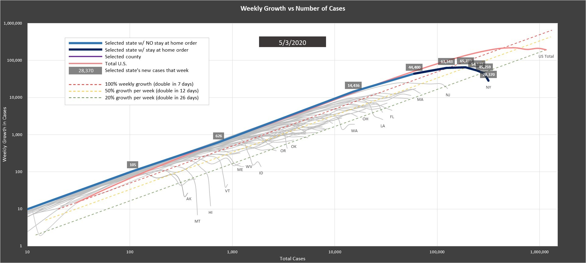
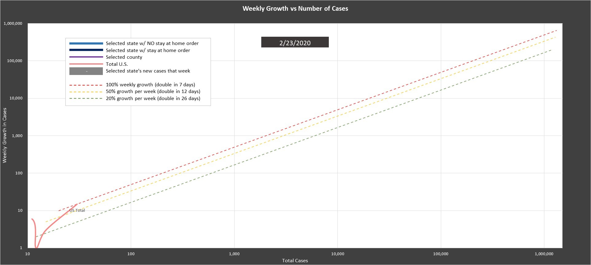
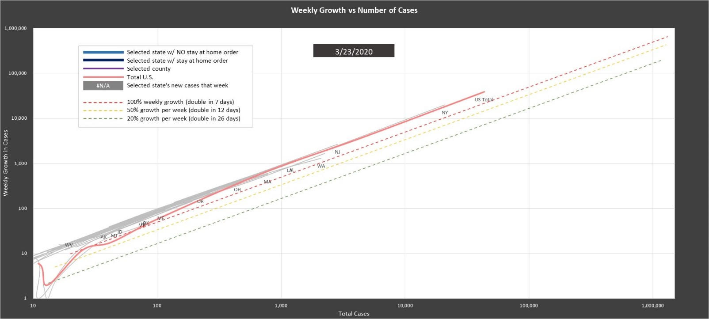
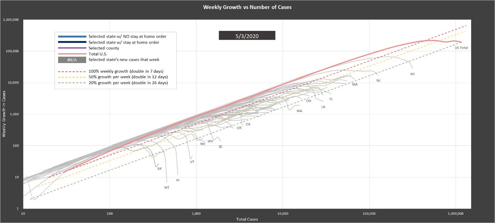
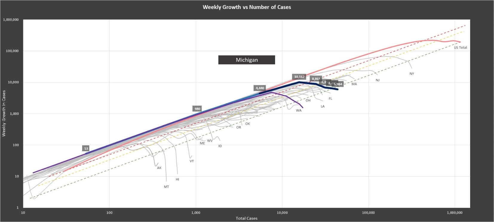
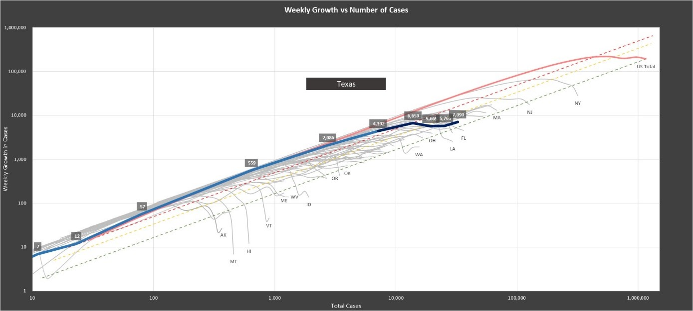
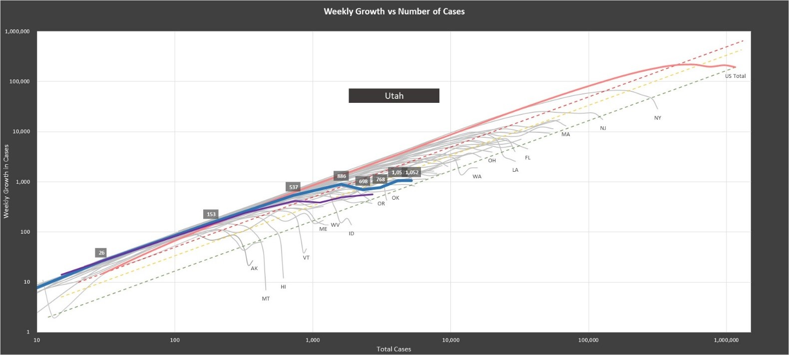

Flattening the Curve Revisited:
Logarithmic Waterfalls
Brent Peterson - May 4, 2020
We’ve all been thinking a lot about covid and it’s spread. New York Times releases updated data on cases and deaths each day. Check out the link to see their methodology and descriptions on collecting the data. There is a lot of data and it can be overwhelming to take it all in and interpret it. Last week I saw this great video by Minute Physics showing a smart way to show the data that is useful. (I know, China’s data isn’t reliable, but that’s not the point.) I have taken that same methodology to look at the data state by state to see how we are doing in my state (Utah) and my county (Salt Lake) in comparison to the rest of the country.
I've posted the workbook here so you can play around with it and check out different places and their progress. I will update the workbook daily with the latest NY Times data.
Covid-19 Cases by State on a Logarithmic Scale Methodology - Here is what the chart looks like as of May 3, using the same methodology that Minute Physics uses. That video does a great job of explaining what's happening so go watch that, but let’s try to break this down.
- First, I look at the data on a weekly scale, giving the growth a weighted average. I do this to limit the noise of any one particular day and give the direction the curve is heading.
- Next, I take the log scale on number of new cases over the log scale of the number of total cases.
The scales multiply by 10 for each tick mark. So why do I do this? The video goes much more into this,
but first, we can look at large numbers and small numbers and see how their rate of change is going vs
the absolute numbers. On this chart, we can see how Alaska and Montana are doing in slowing the growth
in comparison to New York and New Jersey.
On a linear chart, we can see what is happening in New York, but everything else below doesn’t show up very well.
Similarly, we want to focus on growth. When we get into exponential growth, everything can look like hockey sticks, but hard to tell in comparison to each other. We really want to be focusing on the rate of change vs absolute numbers.
U.S. Over Time - jump back to the beginning, in February to lay this out. We had just 30 cases in the U.S. but 15 new cases that week and the line jumped up to the red dotted line. If it is following along this red dotted line, the number of cases is doubling every seven days or a 100% growth per week. Above the line, then the growth is faster and below its slower. This green line is 20% growth per week and takes 26 days to double. The further down the line drops, the better.
Covid-19 Cases on February 23, 2020 On March 23, The U.S. Is above the redline and the days to double the number of cases was around 5.
Covid-19 Cases on March 23, 2020 With the latest data of this post (May 3), you can see the improvement in the rate of new cases. The efforts taken by U.S. seem to be working. The weekly growth rate for the U.S. is around 17% and the days to double is near a month.
The curve starts to drop. As it falls down to the bottom, there is less and less new cases. You can see less populated states fall drastically. Also states that have taken strict measures fall below the green line.
Covid-19 Cases on May 3, 2020 State by State - I put have the ability to focus on an individual state and even an individual county. The dark blue line shows when the state has put in a stay at home order. For Michigan, the first stay at home order went into place on March 24 and then a stricter order on April 1. Almost immediately, the growth rate dropped.
Covid-19 Cases in Michigan on May 3, 2020 Let’s flip through some other states to see. Texas has improved, but its improvement has plateaued.
Covid-19 Cases in Texas on May 3, 2020 Utah, Has also improved, but the improvement has plateaued as well. There was never a state order for Utah, but individual counties and cities did. In the excel document, there is a description of the lockdown measures done by each state.
Covid-19 Cases in Utah on May 3, 2020 Hawaii and Montana is where we want to be (physically as well as in terms of these curves) Though they obviously have some advantages for socially distancing.
Covid-19 Cases in Hawaii on May 3, 2020
It will be interesting to see what happens after these stay at home orders expire. Hopefully those curves will continue to drop and everyone will still practice social distancing.
Thanks for reading and if you have any questions or comments, reach out to me at brentp24@gmail.com.